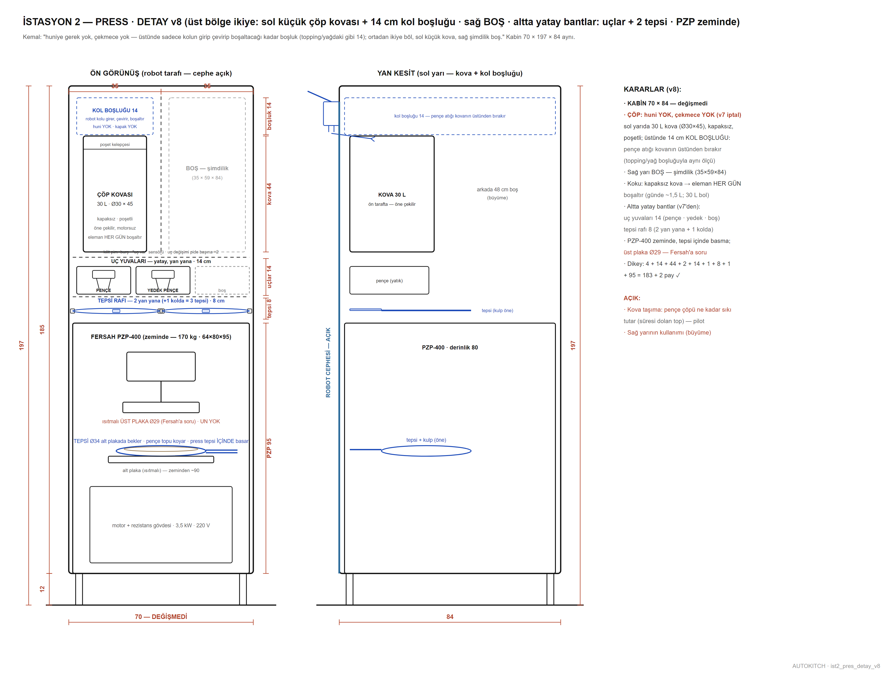

Fersah PZP-400 ısıtmalı pide/pizza presi: top tepsi içinde Ø29 ısıtmalı plakayla açılır. Isıtmalı olduğu için ılık bekleme rafı tamamen kalktı — top dolaptan doğrudan prese gider. Modelin altındaki çubuktan kesit alabilir (X/Y/Z) ve iki noktaya tıklayıp ölçü çıkarabilirsin.
sürükle: döndür · üstüne gel: birim · çift tıkla: aç · alttan kesit + ölçü
22 EYLÜL 2026 · MODEL GÜNCEL, METİN ESKİ
Yukarıdaki 3B model HAT v19'a göre güncel. Bu istasyonun birimleri henüz ölçü kutusu — sırası gelince gerçek üretim modeline çevrilecek (örnek: 3 · TOPPING).
Aşağıdaki açıklama metinleri 14 Eylül'ün 4200 mm'lik tepsili hattından kalmadır, güncel değildir.
1 · Ne yapar · çalışma senaryosu
Robot tepsiyi alt plakaya bırakır (tepsi Ø32 rafta bekler), pençeyle hamur topunu tepsinin içine koyar.
Üst plaka Ø29 ısıtmalı iner, birkaç saniye basar; taban tepsinin içinde şekillenir, hamur tepsi bordürüne (12 mm) çarpmaz. +3 °C'den gelen topu geri çektirmeden bastığı için fırın süresine reçeteden +15–30 sn eklenir.
Kol pençeyi bırakıp tepsiye kilitlenir; pide artık kutuya kadar tepsiden çıkmaz. Basılan taban bekletilmez.
Uç değiştirme: PRESS altındaki yatay yuvalarda pençe ve çatal; kolda tepsi eli.
Çöp: 30 L kapaksız poşetli kova (öne çekilir, huni yok — pençe bırakır); süresi dolan top buraya, gün sonunda sayaçtan fire raporu.
2 · Özellikler · karar özeti
MakineFersah PZP-400 ISITMALI pres: 64×80×95, 170 kg, 3,5 kW 220 V, zeminde; 500–700 adet/saat, 100–750 g, 15–40 cmNeden buısıtmalı plaka soğuk topu geri çektirmez → ılık bekleme rafı gereksiz. CP-330 soğuk pres yarış dışı (ılık raf geri gerektirirdi)Plakaüst Ø29 ısıtmalı (fabrika Ø40 → Ø29 kesilecek), alt ısıtmalı, zeminden ~90Üst bölge (v8)sol yarı kova 30 L + 14 cm kol boşluğu; sağ yarı boş 35×59×84 (büyüme payı)Alt bölgeuç yuvaları 14 (pençe · çatal 50 derinlemesine · boş) + tepsi rafı 8 (2 yan yana + 1 kolda)Firebeklenen %3–5; kova eleman tarafından her gün boşaltılır
3 · Teknik resimler

PRESS v8 — kova + kol boşluğu, uç yuvaları, tepsi rafı